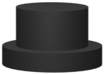
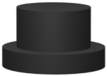

Introduction
- An optical microscope, commonly referred to as a light microscope.
- It uses one or more lenses to magnify visible light images of tiny materials.
- The lenses are positioned between the sample and the viewer's eye to enlarge the image and enable closer examination.
-
There are two types of Optical Microscope:
- Simple Microscope
- Compound Microscope


 
